Pushdown Transducers
Configurations and Moves of Pushdown Transducers
Determinism and Nondeterminism in Pushdown Transducers
Computations of Pushdown Transducers
From Recursive Finite-Domain Programs to Pushdown Transducers
From Pushdown Transducers to Recursive Finite-Domain Programs
Pushdown Automata
In general, recursion in programs is implemented by means of a pushdown store, that is, a last-in-first-out memory. Thus, it is only natural to suspect that recursion in finite-domain programs implicitly allows an access to some auxiliary memory. Moreover, the observation makes it also unsurprising that the computations of recursive finite-domain programs can be characterized by finite-state transducers that are augmented with a pushdown store. Such transducers are called pushdown transducers.
Each pushdown transducer M can be viewed as an abstract computing machine that consists of a finite-state control, an input tape, a read-only input head, a pushdown tape or pushdown store, a read-write pushdown head, an output tape, and a write-only output head (see Figure 3.2.1). Each move of M is determined by the state of M, the input to be consumed, and the content on the top of the pushdown store. Each move of M consists of changing the state of M, reading at most one input symbol, changing the content on top of the pushdown store, and writing at most one symbol into the output.
|
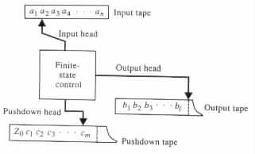
|
Example 3.2.1 A pushdown transducer M can compute the relation { (aibi, ci) | i ³ 1 } by checking that each input has the form a · · · ab · · · b with the same number of a's as b's, and writing that many c's. The computations of M can be in the following manner (see Figure 3.2.2).
|
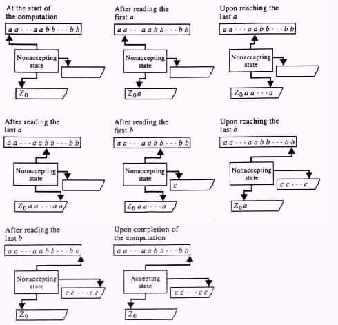
|
Initially the pushdown store is assumed to contain just one symbol, say, Z0 to mark the bottom of the pushdown store. M starts each computation by reading the a's from the input tape while pushing them into the pushdown store. The symbols are read one at a time from the input.
Once M is done reading the a's from the input, it starts reading the b's. As M reads the b's it retrieves, or pops, one a from the pushdown store for each symbol b that it reads from the input. In addition, M writes one c to the output for each symbol b that it reads from the input.
M accepts the input if and only if it reaches the end of the input at the same
time as it reaches the symbol Z0 in the pushdown store. M rejects the input if it
reaches the symbol Z0 in the pushdown store before reaching the end of the
input, because in such a case the input contains more b's than a's. M rejects
the input if it reaches the end of the input before reaching the symbol Z0 in the
pushdown store, because in such a case the input contains more a's than b's.
Formally, a mathematical system M consisting of an eight-tuple <Q, S, G, D, d, q0, Z0, F> is called a pushdown transducer if it satisfies the following conditions.
Example 3.2.2
M = <Q, S, G, D, d, q0, Z0, F> is a pushdown transducer if Q = {q0, q1, q2};
S = {a, b}; D = {a, b}; G = {Z0, c}; d = {(q0, a, e, q0, c, e), (q0, b, e,
q0, c, e), (q0, e, e, q1, e, e), (q1, a, c, q1, e, a), (q1, b, c, q1, e, b), (q1, e, Z0, q2, Z0, e)};
and F = {q2}.
By definition, in each transition rule (q, a, b, p, g, r) the entries q and p are states in Q, a is either an input symbol or an empty string, b is either a pushdown symbol or an empty string, g is a string of pushdown symbols, and r is either an output symbol or an empty string.
Each pushdown transducer M = <Q, S, G, D, d, q0, Z0, F> can be graphically represented by a transition diagram of the following form. For each state in Q the transition diagram has a corresponding node drawn as a circle. The initial state is identified by an arrow from nowhere that points to the corresponding node. Each accepting state is identified by a double circle. Each transition rule (q, a, b, p, g, r) is represented by an edge from the node that corresponds to state q to the node that corresponds to state p. In addition, the edge is labeled with
For notational convenience, edges that agree in their origin and destination are merged, and their labels are separated by commas.
Example 3.2.3 Figure 3.2.3 gives the transition diagram for the pushdown transducer of Example 3.2.2.
|
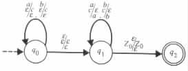
|
on the edge that starts and ends at state q0 corresponds to the transition rule (q0, a, e, q0, e, e). The label
on the edge that starts at state q0 and ends at state q1 corresponds to the transition rule
(q0, e, e, q1, e, e).
The top row "a/" in the label
corresponds to the input tape. The middle row "b/g" corresponds to the pushdown tape. The bottom row "/r" corresponds to the output tape.
Throughout the text the following conventions are assumed for each production rule (q, a, b, p, g, r) of a pushdown transducer. The conventions do not affect the power of the pushdown transducers, and they are introduced to simplify the investigation of the pushdown transducers.
Configurations and Moves of Pushdown Transducers
On each input x from S* the pushdown transducer M has some set of possible configurations (see Figure 3.2.4). Each configuration , or instantaneous description, of M is a triplet (uqv, z, w), where q is a state of M, uv = x is the input of M, z is a string from G* of pushdown symbols, and w is a string from D* of output symbols. Intuitively, a configuration (uqv, z, w) says that M on input x can reach state q with z in its pushdown store, after reading u and writing w. With no loss of generality it is assumed that S and Q are mutually disjoint.
|
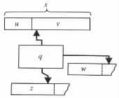
|
The configuration is said to be an initial configuration if q = q0, u = w = e, and z = Z0. Such an initial configuration says that M is in its initial state q0, with none of the input symbols being read yet (i.e., u = e), with the output being still empty (i.e., w = e), and the pushdown being still in its original stage (i.e., z = Z0). In addition, the configuration says that M is given the input v.
The configuration is said to be an accepting configuration if v = e and q is an accepting state. Such an accepting configuration says that M reached an accepting state after reading all the input (i.e., v = e) and writing w. In addition, the configuration says that the input M has consumed is equal to v.
Example 3.2.4 Consider the pushdown transducer M whose transition diagram is given in Figure 3.2.3. (q0abbb, Z0, e) is the initial configuration of M on input abbb. The configuration (abq1bb, Z0cc, e) of M says that M consumed already u = ab from the input, the remainder of the input is v = bb, M has reached state q1 with the string Z0cc in the pushdown store, and the output so far is empty. The configurations are illustrated in Figure 3.2.5(a) and Figure 3.2.5(b), respectively.
|
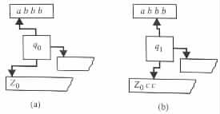
|
(abbbq2, Z0, bb) and (abq2bb, Z0cc, e) are also configurations of M0. The first
configuration is accepting. The second, however, is not an accepting configuration despite
its being in an accepting state, because the input has not been consumed until its end.
The transition rules of M are used for defining the possible moves of M. Each move is in accordance with some transition rule. A move on transition rule (q, a, b, p, g, r) changes the state of the finite-state control from q to p; reads a from the input tape, moving the input head |a| positions to the right; writes r in the output tape, moving the output head |r| positions to the right; and replaces on top of the pushdown store (i.e., from the location of the pushdown head to its left) the string b with the string g, moving the pushdown head |g| - |b| positions to the right. The move is said to be a pop move if |g| < |b|. The move is said to be a push move if |b| < |g|. The symbol under the pushdown head is called the top symbol of the pushdown store.
A move of M from configuration C1 to configuration C2 is denoted C1  M C2, or
simply C1 C2 if M is understood. A sequence of zero or more moves of M from
configuration C1 to configuration C2 is denoted C1 M * C2, or simply C1 * C2, if M is
understood.
M C2, or
simply C1 C2 if M is understood. A sequence of zero or more moves of M from
configuration C1 to configuration C2 is denoted C1 M * C2, or simply C1 * C2, if M is
understood.
Example 3.2.5
The pushdown transducer whose transition diagram is given in Figure 3.2.3, has a sequence
of moves on input abbb that is given by the following sequence of configurations:
(q0abbb, Z0, e) (aq0bbb, Z0c, e) (abq0bb, Z0cc, e) (abq1bb, Z0cc, e) (abbq1b,
Z0c, b) (abbbq1, Z0, bb) (abbbq2, Z0, bb). This sequence is the only one
that can start at the initial configuration and end at an accepting configuration
for the input abbb. The sequence of configurations is depicted graphically in
Figure 3.2.6.
|
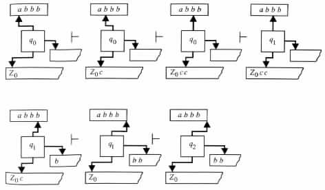
|
All the moves of M on the transition rules that both start and end at state q0 are push
moves. All the moves of M on the transition rules that both start and end at state q1 are
pop moves.
A string in the pushdown store that starts at the bottom symbol and ends at the top symbol, excluding the bottom symbol, is called the content of the pushdown store. The pushdown store is said to be empty if its content is empty.
Example 3.2.6
Let M be the pushdown transducer of Figure 3.2.3. Consider the computation of M on
input abbb (see Figure 3.2.6). M starts with an empty pushdown store, adding c to the store
during the first move. After the second move, the content of the pushdown store is cc.
The content of the pushdown store does not change during the third move.
Determinism and Nondeterminism in Pushdown Transducers
The definitions of determinism and nondeterminism in pushdown transducers are, in principal, similar to those provided for finite-state transducers. The difference arises only in the details.
A pushdown transducer M = <Q, S, G, D, d, q0, Z0, F> is said to be deterministic if for each state q in Q; each input symbol a in S; and each pushdown symbol Z in G, the union d(q, a, Z) È d(q, a, e) È d(q, e, Z) È d(q, e, e), is a multiset that contains at most one element.
Intuitively, M is deterministic if the state and the top pushdown symbol are sufficient for determining whether or not a symbol is to be read from the input, and the state, the top pushdown symbol, and the input to be read are sufficient for determining which transition rule is to be used.
A pushdown transducer is said to be nondeterministic if it is not a deterministic pushdown transducer.
Example 3.2.7 Let M1 be the pushdown transducer whose transition diagram is given in Figure 3.2.3.
In a move from state q1, the pushdown transducer M1 reads an input symbol if and only if the topmost pushdown symbol is not Z0. If the symbol is not Z0, then the next symbol in the input uniquely determines which transition rule is to be used in the move. If the topmost pushdown symbol is Z0, then M1 must use the transition rule that leads to q2. Consequently, the moves that originate at state q1 can be fully determined "locally."
On the other hand, the moves from state q0 cannot be determined locally, because the topmost pushdown symbol is not sufficient for determining if an input symbol is to be read in the move.
It follows that M1 is a nondeterministic pushdown transducer. However, the pushdown transducer M2 whose transition diagram is given in Figure 3.2.7 is deterministic.
|
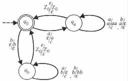
|
To move from state q0 the pushdown transducer M2 has to read an input symbol. If it reads the symbol a, then the move takes M2 to state qa. If it reads the symbol b, then the move takes M2 to state qb.
The topmost symbol in the pushdown store determines whether M2 must enter state q0
or state qa on a move that originates at state qa. If the topmost symbol is Z0, then M
moves to state q0. If the topmost symbol is a, then M moves to state qa. In the latter case
M uses the transition rule (qa, a, a, qa, aa, c) if the input symbol to be read is a, and
it uses the transition rule (qa, b, a, qa, e, e) if the symbol to be read is b.
Computations of Pushdown Transducers
The computations of the pushdown transducers are also defined like the computations of the finite-state transducers. An accepting computation of a pushdown transducer M is a sequence of moves of M that starts at an initial configuration and ends at an accepting one. A nonaccepting , or rejecting, computation of M is a sequence of moves on an input x, for which the following conditions hold.
A computation is said to be a halting computation if it consists of a finite number of moves.
Example 3.2.8 Consider the pushdown transducer M whose transition diagram is given in Figure 3.2.7. The pushdown transducer has accepting computations only on those inputs that have the same number of a's as b's. On each input w in which the pushdown transducer has an accepting computation, it writes the string ci onto the output tape, where i = (the number of a's in w) = (the number of b's in w).
The pushdown transducer enters state q0 whenever the portion of the input read so far contains the same number of a's and b's. The pushdown transducer enters state qa whenever the portion of the input read so far contains more a's than b's. Similarly, the pushdown transducer enters state qb whenever the portion of the input read so far contains more b's than a's. The pushdown store is used for recording the difference between the number of a's and the number of b's, at any given instant of a computation.
On input aabbba the pushdown transducer M has only one computation. M starts the
computation by moving from state q0 to state qa, while reading a, writing c, and
pushing a into the pushdown store. In the second move M reads a, writes c, pushes a
into the pushdown store, and goes back to qa. In the third and fourth moves M
reads b, pops a from the pushdown store, and goes back to state qa. In the fifth
move M goes to state q0 without reading, writing, or changing the content of the
pushdown store. In the sixth move M reads b, pushes b into the pushdown store, and
moves to state qb. In its seventh move M reads a, pops b from the pushdown
store, writes c, and goes back to qb. The computation terminates in an accepting
configuration by a move from state qb to state q0 in which no input is read, no output
is written, and no change is made in the content of the pushdown store.
By definition, each move in each computation must be on a transition rule that keeps the computation in a path, that eventually causes the computation to read all the input and halt in an accepting state. Whenever more than one such alternative in the set of feasible transition rules exists, then any of these alternatives can be chosen. Similarly, whenever none of the feasible transition rules satisfies the conditions above, then any of these transition rules can be chosen. This observation suggests that we view the computations of the pushdown transducers as also being executed by imaginary agents with magical power.
An input x is said to be accepted , or recognized, by a pushdown transducer M if M has an accepting computation on x. An accepting computation on x that terminates in a configuration of the form (xqf, z, w) is said to have an output w. The output of a nonaccepting computation is assumed to be undefined.
Example 3.2.9 Consider the pushdown transducer M, whose transition diagram is given in Figure 3.2.3. The pushdown transducer accepts exactly those inputs that have even length. In each accepting computation the pushdown transducer outputs the second half of the input.
As long as the pushdown transducer is in state q0, it repeatedly reads an input symbol and stores c in the pushdown store. Alternatively, as long as the pushdown transducer is in state q1, it repeatedly reads an input symbol and pops c from the pushdown store.
Upon reaching an empty pushdown store, the pushdown transducer makes a transition from state q1 to state q2 to verify that the end of the input has been reached. Consequently, in its accepting computations, the pushdown transducer must make a transition from state q0 to state q1 upon reaching the middle of its inputs.
On input abbb the pushdown transducer starts (its computation) with two moves, reading the first two input symbols, pushing two c's into the pushdown store, and returning to state q0. In its third move the pushdown transducer makes a transition from state q0 to state q1.
The pushdown transducer continues with two moves, reading the last two symbols in the input, popping two c's from the pushdown store, and copying the input being read onto the output tape.
The pushdown concludes its computation on input abbb by moving from state q1 to state q2.
If M on input abbb reads more than two input symbols in the moves that originate at
state q0, it halts in state q1 because of an excess of symbols in the pushdown store. If M on
input abbb reads fewer than two input symbols in the moves that originates at
state q1, it halts in state q1 because of a lack of symbols in the pushdown store.
In either case the sequences of moves do not define computations of M.
This example shows that, on inputs accepted by a pushdown transducer, the transducer may also have executable sequences of transition rules which are not considered to be computations.
Other definitions, such as those of the relations computable by pushdown transducers, the languages accepted by pushdown transducers, and the languages decided by pushdown transducers, are similar to those given for finite-state transducers in Section 2.2.
Example 3.2.10 The pushdown transducer M1, whose transition diagram is given in Figure 3.2.3, computes the relation { (xy, y) | xy is in {a, b}*, and |x| = |y| }.
The pushdown transducer M2, whose transition diagram is given in Figure 3.2.7
computes the relation { (x, ci) | x is in {a, b}*, and i = (number of a's in x) = (number of
b's in x) }.
From Recursive Finite-Domain Programs to Pushdown
Transducers
The simulation of recursive finite-domain programs by pushdown transducers is similar to the simulation of the finite-memory programs by the finite-state transducers, as long as no call and return instructions are encountered. In such a case the pushdown transducers just trace across the states of the programs without using the pushdown store.
Upon reaching the call instructions, the pushdown transducers use their store to record the states from which the calls originate. Upon reaching the return instructions, the pushdown transducers retrieve from the store the states that activated the corresponding calls, and use this information to simulate the return instructions.
Specifically, consider any recursive finite-domain program P. Assume that P has m variables x1, ¼ , xm, and k instruction segments I1, ¼ , Ik. Denote the initial value with in the domain of the variables of P. Let a state of P be an (m + 1)-tuple [i, v1, ¼, vm], where i is a positive integer no greater than k and v1, ¼ , vm are values from the domain of the variables of P.
The computational behavior of P can be modeled by a pushdown transducer M = <Q, S, G, D, d, q0, Z0, F> whose states are used for recording the states of P, whose transition rules are used for simulating the transitions between the states of P, and whose pushdown store is used for recording the states of P which activated those executions of the procedures that have not been deactivated yet. Q, S, G, D, d, q0, Z0, and F are defined in the following manner.
Example 3.2.11 Consider the recursive finite-domain program P in Figure 3.1.1 with {0, 1} as the domain of its variables. The program is abstracted by the pushdown transducer whose transition diagram is given in Figure 3.2.8.
|
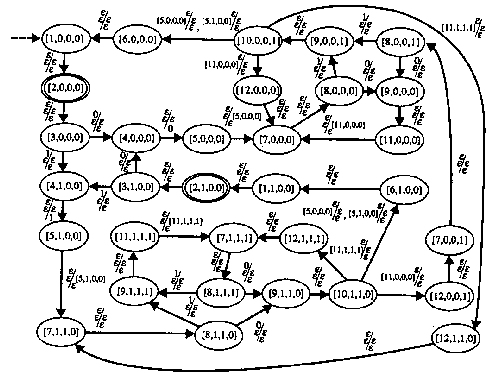
|
On moving from state [3, 0, 0, 0] to state [4, 0, 0, 0], the pushdown transducer reads the value 0 into x. On moving from state [3, 0, 0, 0] to state [4, 1, 0, 0], the pushdown transducer reads the value 1 into x.
Each move from state [5, 1, 0, 0] to state [7, 1, 1, 0] corresponds to a call instruction, and each such move stores the state [5, 1, 0, 0] in the pushdown store. In each such move, the value of y in state [7, 1, 1, 0] is determined by the value of x in state [5, 1, 0, 0], and the values of x and z in [7, 1, 1, 0] are determined by the values of x and z in state [5, 1, 0, 0].
Each move from state [10, 1, 1, 0] to state [6, 1, 0, 0] that uses the transition rule ([10, 1, 1, 0], e, [5, 1, 0, 0], [6, 1, 0, 0], e, e, e) corresponds to an execution of a return instruction for a call that has been originated in state [5, 1, 0, 0]. The value of x in state [6, 1, 0, 0] is determined by the value of y in state [10, 1, 1, 0]. The values of y and z state [6, 1, 0, 0] are determined by values of y and z in state [5, 1, 0, 0].
The pushdown transducer has the following computation on input 0011.

From Pushdown Transducers to Recursive Finite-Domain
Programs
Using the previous discussion, we conclude that there is an algorithm that translates any given recursive finite-domain program into an equivalent pushdown transducer. Conversely, there is also an algorithm that derives an equivalent recursive finite-domain program from any given pushdown transducer M = <Q, S, G, D, d, q0, Z0, F>. The recursive finite-domain program can be a table-driven program of the form shown in Figure 3.2.9. The program simulates the pushdown transducer in a manner similar to that of simulating a finite-state transducer by a finite-memory program as shown in Section 2.2. The main difference is in simulating the effect of the pushdown store.
The program uses the variable state for recording the states that M leaves in its moves, the variable top for recording the topmost symbol in the pushdown store, the variable in for recording inputs that M consumes in its moves, the variable next_ state for recording the states that M enters in its moves, the variable pop for recording the substrings that are replaced on top of the pushdown store, the variable push for recording the changes that have to be made on top of the pushdown store, and a variable out for recording the outputs that have to be written in the moves of M.
The content of the pushdown store is recorded indirectly through recursion. Each pushing of a symbol is simulated by a recursive call, and each popping of a symbol is simulated by a return.
The main program initializes the variable state to q0, and calls RP to record a pushdown store containing only Z0.
The body of the recursive procedure RP consists of an infinite loop. Each iteration of the loop starts by checking whether an accepting state of M has been reached at the end of the input. If such is the case, the program halts in an accepting configuration. Otherwise, the program simulates a single move of M. The predicate F is used to determine whether state holds an accepting state.
The simulation of each move of M is done in a nondeterministic manner. The program guesses the input to be read, the top portion of the pushdown store to be replaced, the state to be reached, the replacement to the top of the store, and the output to be written. Then the program uses the predicate d for determining the appropriateness of the guessed values. The program aborts the simulation if it determines that the guesses are inappropriate. Otherwise, the program records the changes that have to be done as a result of the guessed transition rule.
The variables of the program are assumed to have the domain Q È S È G È D È {e}, with e being a new symbol. In addition, with no loss of generality, it is assumed that each transition rule (q, a, b, p, g, r) of M satisfies either |b| + |g| = 1 or b = g = Z0. The latter assumptions are made to avoid the situation in which both a removal and an addition of a symbol in the pushdown store are to be simulated for the same move of M.
Example 3.2.12 For the pushdown transducer of Figure 3.2.3 the table-driven program has the domain of variables equal to {a, b, Z0, c, q0, q1, q2, e}. The truth values of the predicates F and d are defined by the corresponding tables in Figure 3.2.10.
|
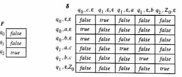
|
The pushdown transducer can be simulated also by the non-table-driven program of
Figure 3.2.11.
|
In a manner similar to the one discussed in Section 2.2 for finite-state transducers, the recursive finite-domain program can be modified to be deterministic whenever the given pushdown transducer is deterministic.
A formalization of the previous discussion implies the following theorem.
Theorem 3.2.1 A relation is computable by a nondeterministic (respectively, deterministic) recursive finite-domain program if and only if it is computable by a nondeterministic (respectively, deterministic) pushdown transducer.
Pushdown transducers whose output components are ignored are called pushdown automata. Formally, a pushdown automaton is a tuple <Q, S, G, d, q0, Z0, F>, where Q, S, G, q0, Z0, and F are defined as for pushdown transducers, and d is a relation from Q × (S È {e}) × (G È {e}) to Q × G*.
As in the case for pushdown transducers, the following conditions are assumed for each transition rule (q, a, b, p, g) of a pushdown automaton.
Example 3.2.13
The pushdown automaton M that is induced by the pushdown transducer
of Figure 3.2.3 is <Q, S, d, q0, F>, where Q = {q0, q1, q2}, S = {a, b},
G = {Z0, c}, d = {(q0, a, e, q0, c), (q0, b, e, q0, c), (q0, e, e, q1, e), (q1, a, c, q1, e),
(q1, b, c, q1, e), (q1, e, Z0, q2, Z0)}, and F = {q2}. The pushdown automaton is
represented by the transition diagram of Figure 3.2.12.
|
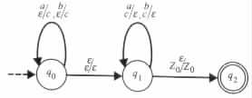
|
The pushdown automaton is said to be deterministic if for each state q in Q, each input symbol a in S, and each pushdown symbol Z in G the union d(q, a, Z) È d(q, a, e) È d(q, e, Z) È d(q, e, e) is a multiset that contains at most one element. The pushdown automaton is said to be nondeterministic if it is not a deterministic pushdown automaton.
A configuration , or an instantaneous description, of the pushdown automaton is a pair
(uqv, z), where q is a state in Q, uv is a string in S*, and z is a string in G*. Other
definitions, such as those for initial and final configurations, M , , M *, *; and
acceptance, recognition, and decidability of a language by a pushdown automaton, are
similar to those given for pushdown transducers.
Example 3.2.14 The transition diagram in Figure 3.2.13
|
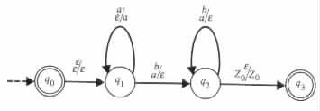
|
The transition diagram in Figure 3.2.14
|
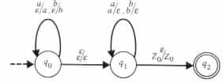
|
![([1,0,0,0]0011,Z0,e) |- ([2,0,0,0]0011,Z0,e)
|- ([3,0,0,0]0011,Z0,e)
|- (0[5,0,0,0]011,Z0,0)
|- |- (0(0[[78,0,0,,00,0,0]]010111,,ZZ0[5[5,,0,0,00,,0]0],,0)0)
|- (00[9,0,0,0]11,Z00[5,0,0,0],0)
|- (00[11,0,0,0]11,Z0[5,0,0,0],0)
|- (00[7,0,0,0]11,Z0[5,0,0,0][11,0,0,0],0)
|- |- (0(000[18,[90,,00,,00,]111]1,,ZZ0[5[5,,0,0,00,,0]0][1[111,,00,0,0,,00],],00))
|- (001[10,0,0,1]1,0Z0[5,0,0,0][11,0,0,0],0)
|- (001[12,0,0,0]1,Z0[5,0,0,0],0)
|- (001[7,0,0,0]1,Z0[5,0,0,0],0)
|- |- (0(00011[81,[90,,00,,00,]11,],ZZ0[5[5,,0,0,00,,0]0],,0)0)
|- (0011[10,0,0,1],0Z0[5,0,0,0],0)
|- (0011[6,0,0,0],Z0,0)
|- (0011[1,0,0,0],Z0,0)](theory-bk-three7x.gif)
 e then write out
if pop
e then write out
if pop e then return
if push
e then return
if push e then call RP(push)
until false
end
e then call RP(push)
until false
end  a) and (in
a) and (in b) then reject
next_ top := c
call RP(next_ top)
or
state := q1
until true
if state = q1 then
do
if top = Z0 then state := q2
if top = c then
do
read in
if (in
b) then reject
next_ top := c
call RP(next_ top)
or
state := q1
until true
if state = q1 then
do
if top = Z0 then state := q2
if top = c then
do
read in
if (in a) and (in
a) and (in b) then reject
write in
return
until true
until false
if state = q2 then
if eof then accept
until false
end
b) then reject
write in
return
until true
until false
if state = q2 then
if eof then accept
until false
end